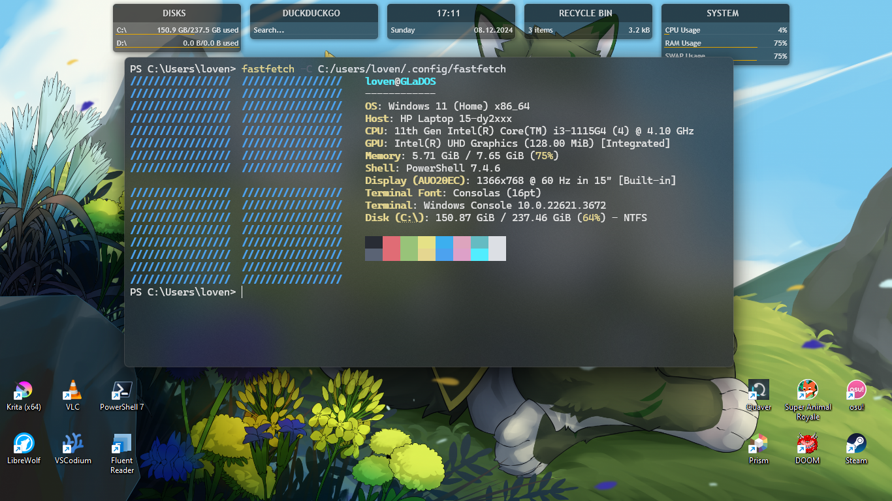

Personally, I adore when people share what things they use. Everybody's a bit different and talking about what you use can be a good conversation starter (at least for tech lovers like me (>/////< '') ). So, after seeing some of my neighboring netizens (namely Corvus and Eric) show off their tools, I decided it would be nice idea to show mine!
